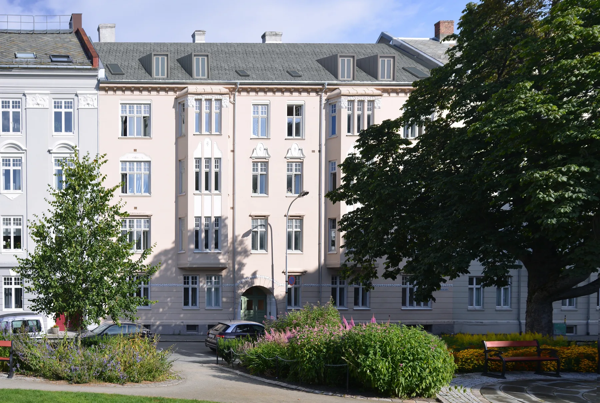
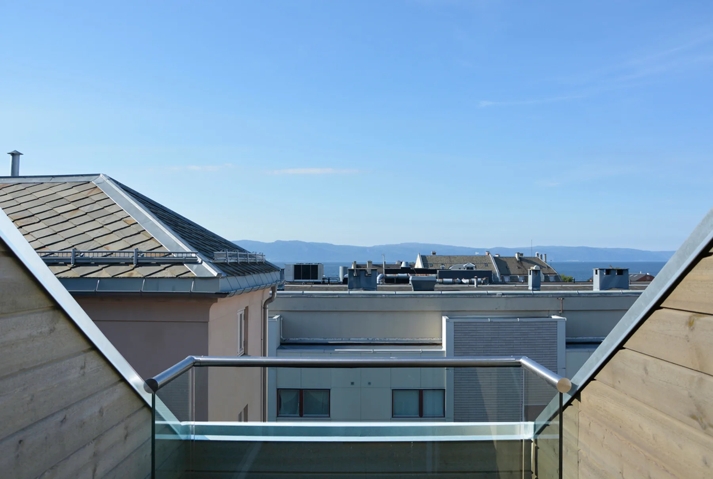
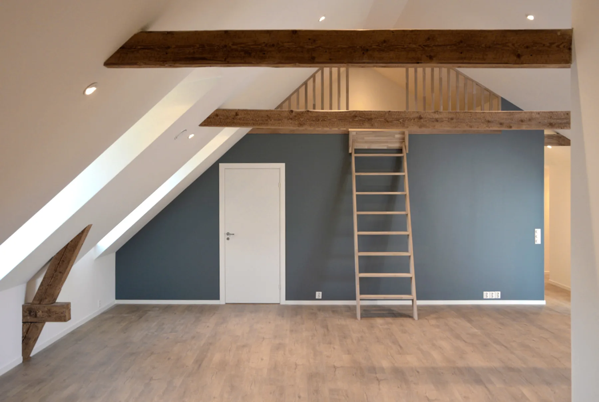
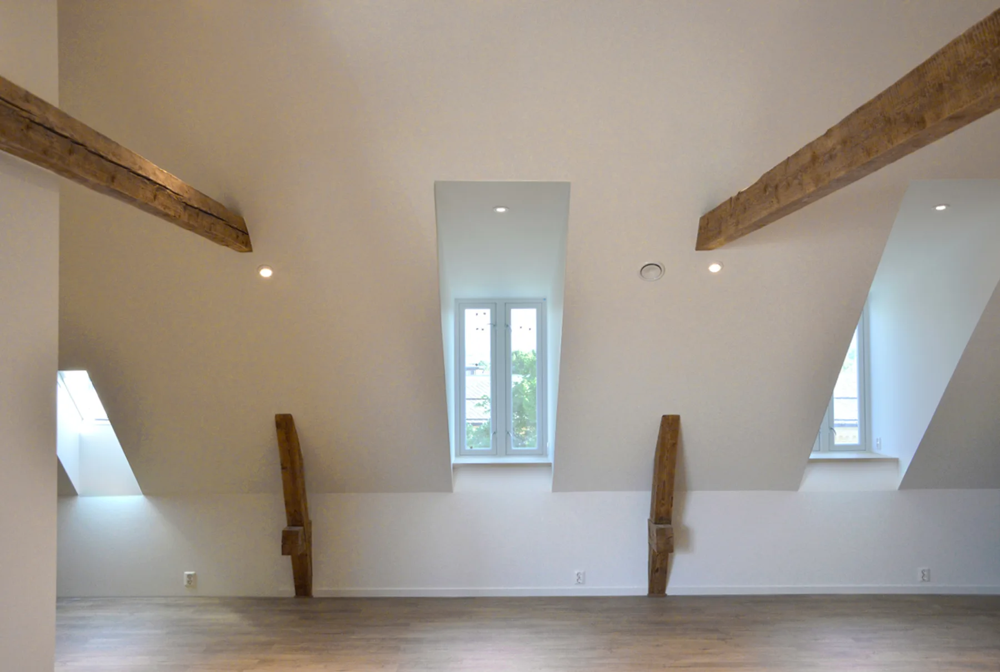
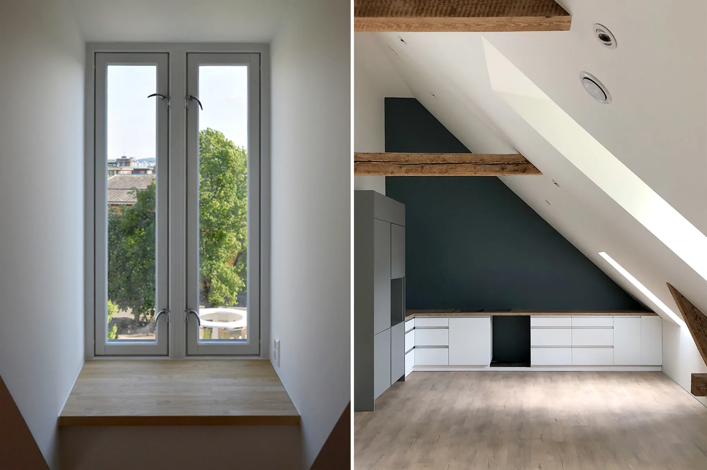
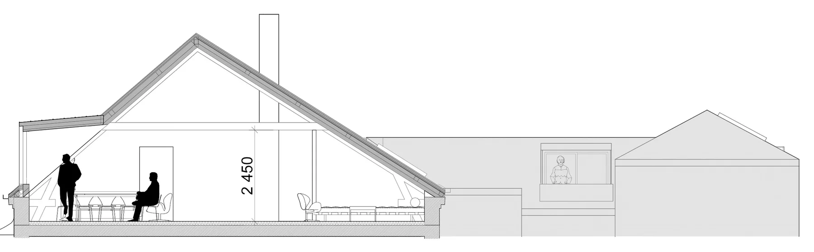
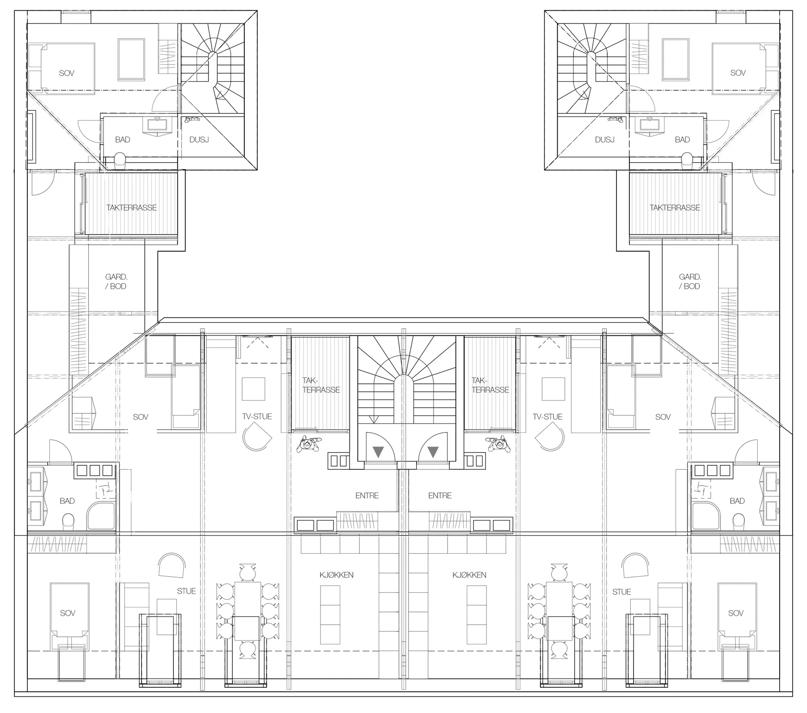
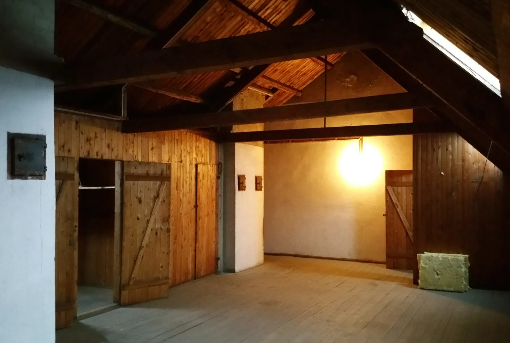
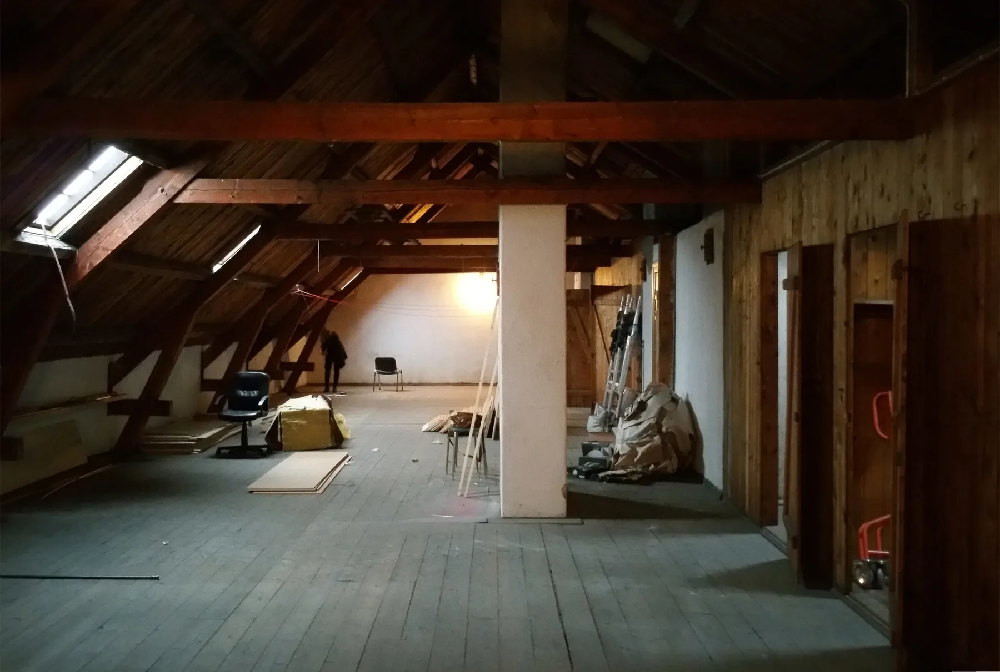
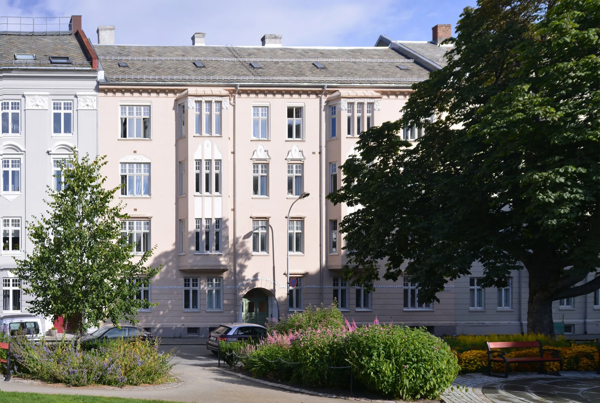

Hans Hagerups gate 8
30Ombygging av tørkeloft til leiligheter
Bolig · fritid · Ombruk · transformasjon · AntikvariskSe bildegalleri

- Byggherre
- Zolen & Månen AS
- Byggeår
- 2018
- Medarbeidere
- Rita Morken og Gunnar Stenberg
Om prosjektet
Et tidligere tørkeloft i en jugendgård er ombygget til to gjennomgående leiligheter. Nye takopplett og lysåpninger gir boligene kontakt med Museumsplass og bakgården.
Bilder & tegninger10 bilder



Forstørr

Forstørr

Forstørr

Forstørr

Forstørr

Forstørr

Forstørr

Forstørr

ForstørrSkjermet takterrasse med utsikt mot Trondheimsfjorden (Foto: Byggherre) · Interiør fra en av de to nye leilighetene. (Foto: Byggherre) · Takopplett med utsikt til Museumsplass. Det nye interiøret / kjøkkenet. (Foto: Byggherre)
La oss begynne med en samtale